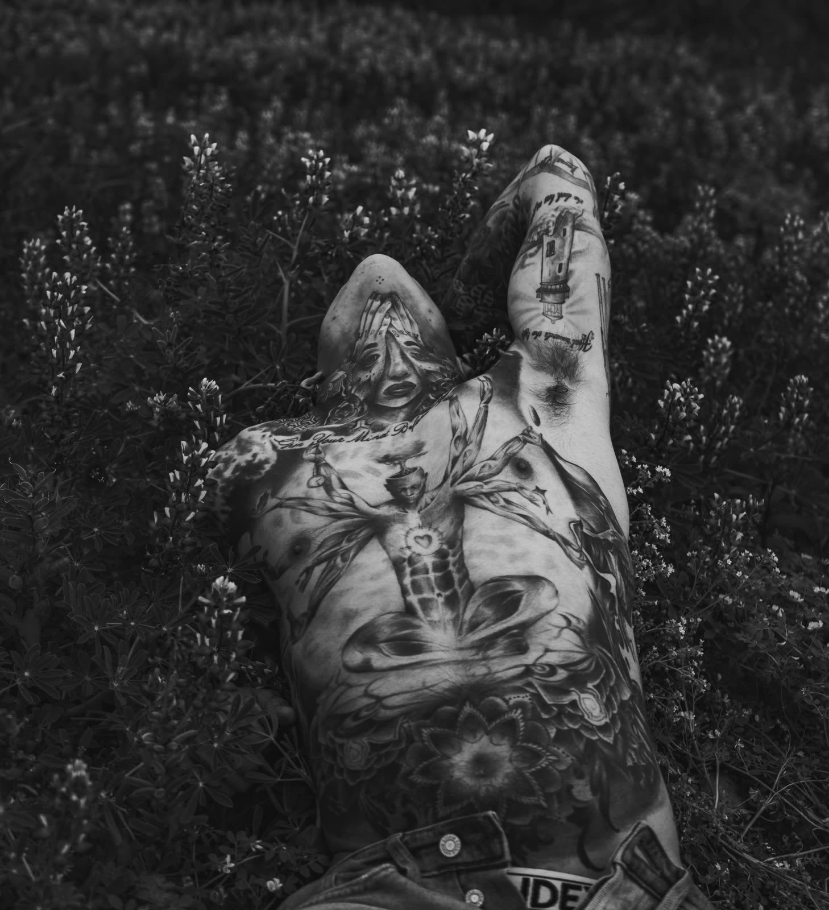

Osećaj bola zavisi od mesta na telu

Prvo pitanje koje skoro svako postavi pre svoje prve tetovaže glasi: koliko boli? Iskren odgovor je da ne postoji jedan odgovor, jer bol nije isti na svakom delu tela. Neko mesto ćeš jedva osetiti, a drugo će te naterati da stisneš zube. Da bi znao šta te čeka, dobro je da razumeš od čega taj osećaj zapravo zavisi.
Glavna stvar koja određuje koliko će boleti jeste koliko je koža na tom mestu blizu kosti i koliko ima mekog tkiva ispod nje. Tamo gde je koža tanka i odmah ispod nje se nalazi kost, osećaj je oštriji i intenzivniji. Zato su mesta kao što su rebra, gležnjevi, prsti, ključna kost i lakat poznata kao zahtevnija. Igla praktično vibrira uz kost i to tvoje telo veoma jasno oseti.
Sa druge strane, delovi tela gde ima više mišića i masnog tkiva podnose se mnogo lakše. Nadlaktica, spoljna strana ruke, list i butina imaju taj mekani sloj koji ublažava osećaj. Mnogi ljudi koji su tetovirali i rebra i nadlakticu kažu da su te dve stvari kao dan i noć. Zbog toga se prva tetovaža često preporučuje baš na nekom od tih mekših mesta, da bi čovek prošao kroz iskustvo bez preteranog stresa.
Postoji i deo priče koji nema veze sa mestom, već sa tvojim telom u tom trenutku. Kada počne tetoviranje, telo oslobađa adrenalin, i zato mnogi kažu da je prvih desetak minuta najintenzivnije. Posle toga telo se prilagodi, adrenalin i endorfini urade svoje, i osećaj postane podnošljiviji. Zbog toga duže seanse imaju svoj ritam, gde su početak i sam kraj, kada je telo umorno, obično najteži delovi.
Ono što mnogi ne znaju jeste koliko tvoje opšte stanje utiče na doživljaj bola. Ako dođeš na tetoviranje neispavan, gladan ili mamuran, sve će te boleti mnogo više. Nizak nivo šećera u krvi čini telo osetljivijim, pa je pravilo svakog dobrog majstora da mušterija pre dolaska nešto pojede i da se dobro naspava. Voda je takođe važna, jer hidrirana koža lakše prima mastilo i lakše se tetovira.
Vredi znati i da svako telo doživljava bol drugačije. Ono što je jednoj osobi nepodnošljivo, drugoj je sasvim u redu, i to nema veze sa hrabrošću, već sa načinom na koji nervni sistem svakog čoveka reaguje. Zato nema smisla porediti se sa drugima. Najbolji savet je da dišeš mirno, da ne zadržavaš dah i da se ne grčiš, jer napet mišić boli više nego opušten. Ako ti u nekom trenutku bude previše, svaki majstor koji drži do sebe će rado napraviti kratku pauzu.
The first question almost everyone asks before their first tattoo is: how much does it hurt? The honest answer is that there is no single answer, because the pain is not the same everywhere on the body. Some spots you will barely feel, others will have you gritting your teeth. To know what is coming, it helps to understand what that feeling actually depends on.
The main thing that determines how much it will hurt is how close the skin is to bone at that spot, and how much soft tissue sits underneath. Where the skin is thin and bone is right beneath it, the sensation is sharper and more intense. That is why places like ribs, ankles, fingers, collarbone and elbow are known as the demanding ones. The needle practically vibrates against the bone and your body feels that very clearly.
On the other hand, parts of the body with more muscle and fat are much easier to take. The upper arm, the outside of the arm, the calf and the thigh have that soft layer that cushions the feeling. Many people who have tattooed both ribs and upper arm say the two are night and day. That is why a first tattoo is often recommended on one of those softer spots, so you can go through the experience without too much stress.
There is also a part of the story that has nothing to do with location and everything to do with your body in that moment. When tattooing starts, the body releases adrenaline, which is why many say the first ten minutes are the most intense. After that the body adapts, adrenaline and endorphins do their work, and the feeling becomes more bearable. That is why longer sessions have their own rhythm, where the beginning and the very end, when the body is tired, are usually the hardest parts.
What many people do not know is how much your general state affects the pain. If you show up sleep deprived, hungry or hungover, everything will hurt far more. Low blood sugar makes the body more sensitive, which is why every good artist has a rule that the client eats something beforehand and gets a proper night of sleep. Water matters too, because hydrated skin takes ink more easily and is easier to tattoo.
It is also worth knowing that every body experiences pain differently. What is unbearable to one person is perfectly fine for another, and that has nothing to do with toughness, only with how each person's nervous system reacts. So there is no point comparing yourself to others. The best advice is to breathe calmly, not hold your breath and not tense up, because a tense muscle hurts more than a relaxed one. And if it ever gets to be too much, any artist worth their salt will gladly take a short break.